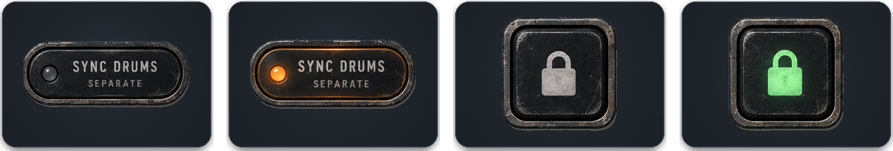

07 — AudioXL suite
One chain,
two plugins
Hand the whole rack to AudioXL Master Rack with one switch.
Either sideSYNC MASTER RACK here, SYNC DRUMS there: same switch.
As it standsSeven modules travel with values and menus — and bypass here.
Voices stayPer-voice REVERB, DELAY, DRIVE, CLICK stay on each track.
SafeSync off: everything goes back. Rack gone? Back in 1.5 s.

State 1
Separate
Each on its own.
State 2
Waiting
On — the link engages when the other arrives.
State 3
Handed over
Master Rack colours the mix.
